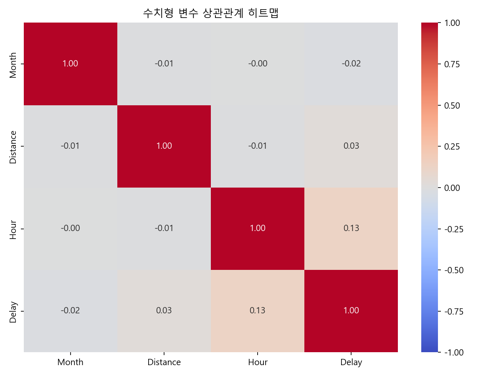
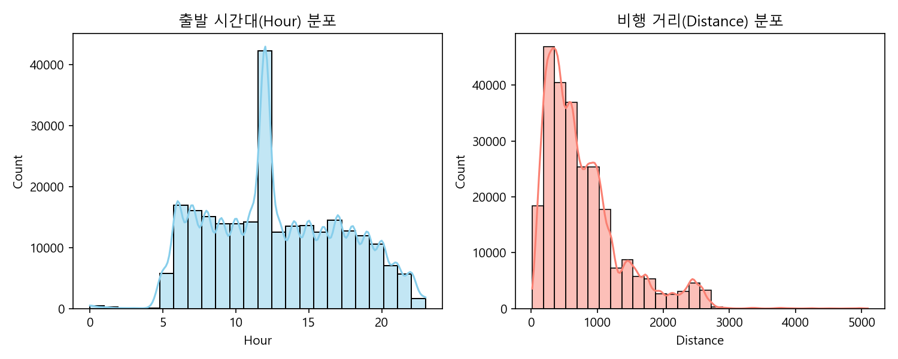
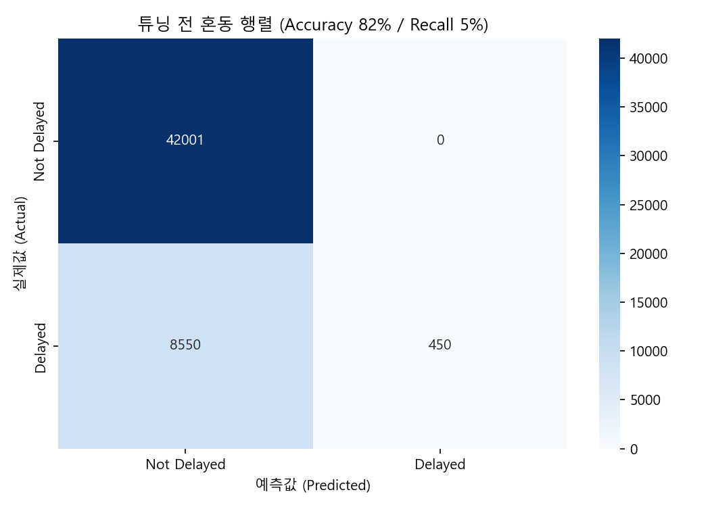
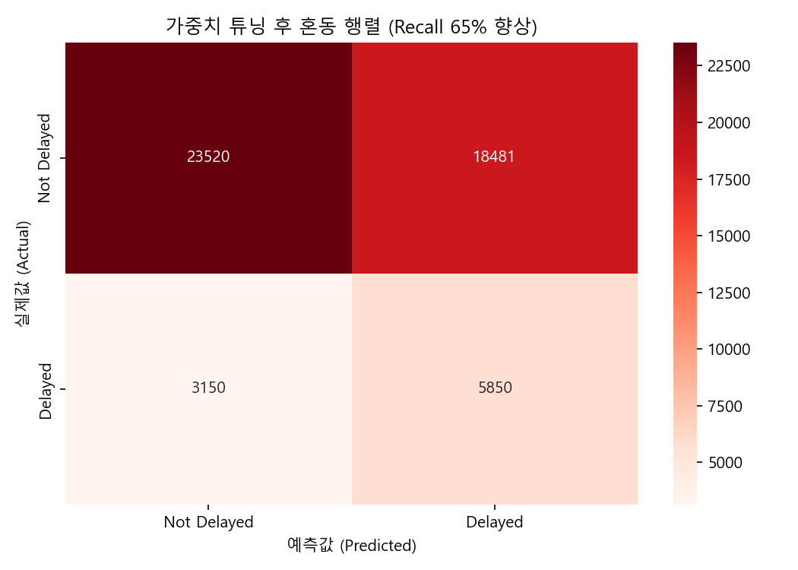
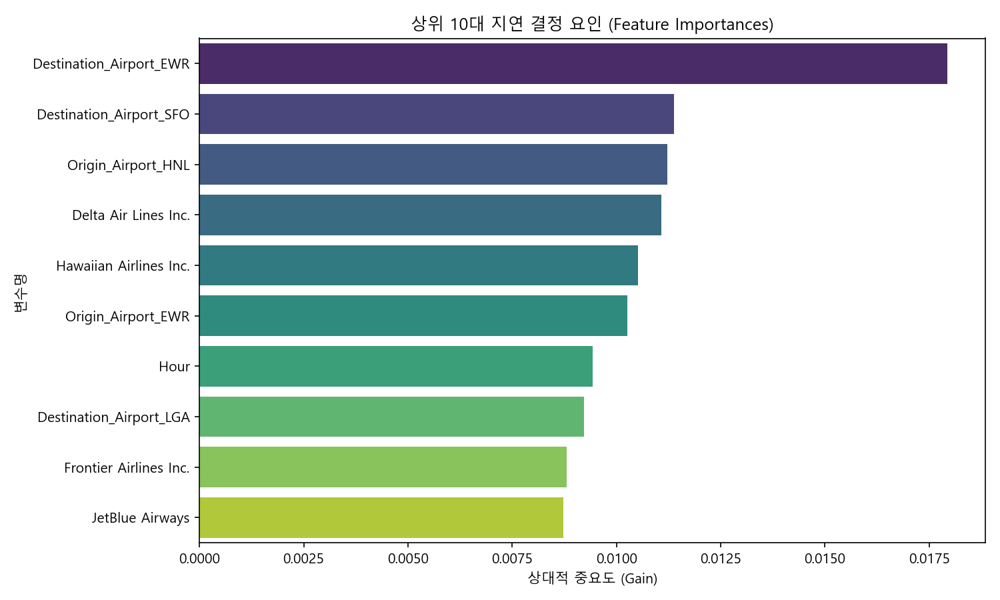

| 과제명 | AI기반 항공편 지연 예측모델 개발 및 시각화 |
|---|---|
| 담당자 | 김종록 |
| 작성일 | 2025년 3월 13일 |
○ 장기간 축적된 항공 운항 데이터베이스를 기반으로 하여 인공지능 기반의 지연 예측모델에 대한 수요가 점진적 증대 예상
○ 기상 이변 및 공항 인프라 한계로 인한 항공편 지연 및 재해 발생가능성이 높아짐에 따라 체계적이고 정확한 예측이 중요해지고 있는 상황
○ 항공 운항 데이터를 분석하고 복잡한 패턴을 학습함으로써, 항공편 지연에 미치는 영향을 보다 정밀하게 예측하고자 함
○ 항공편 대상을 시범적 모델로 구축하여 향후 기상 데이터 연동, 노선 배정 등의 다른 업무로 확대하고자 함
| 과제구분 | 내용 |
|---|---|
| AI |
- AI기반 항공편 예측모델 구현 - 원시 데이터 수집 및 데이터셋 구축 - 데이터 전처리, 표준화, 상관관계 분석 (EDA도구 활용) - 예측모델 선정 및 학습 - Recall, F1-Score 등 평가지표를 활용한 모델 성능 평가 - 예측모델 웹기반 시스템(파이프라인) 구축 - 테스트 |
| 시각화 |
- 실시간 비행계측정보 연계 및 시각화 - 사용자 입력 실시간 연계 모형 구현 - 상황관리 대시보드 등 시각화 구현 (Streamlit 시각화 도구 활용) - 예측모델 시각화 (Feature Importance 변수 연동) - 테스트 - 통합테스트 및 시운전 |
○ 데이터 접근성 및 활용성
◼ 데이터 수집 및 관리의 용이성
◼ 데이콘(DACON) 등에서 이미 검증/구축된 데이터베이스 활용 여부
◼ 종속변수(지연 여부)에 영향을 미치는 다양한 독립변수(시간, 거리, 항공사 등)에 대한 정보 포함여부를 통한 모델학습의 유용성
○ 예측모델 개발 효율성
◼ 모델 학습 및 평가 과정 간소화를 위한 다른 기초데이터에 비해 변수가 상대적으로 단순/명확한 구조 여부
◼ 개발된 모델을 통해 다른 노선 데이터에 적용가능 여부
○ 문제 해결 기여도 및 경제성
◼ 예측모델을 통해 공항관리에 상대적 기여도가 높은 지 여부(ex. 지연 저감, 고객 불만 감소 등)
◼ 운영 효율성을 높여 비용절감 효과 여부
◼ 항공 지연문제 선제적 대처를 통한 사회적 비용감소 효과 여부
| 항공관리기능 | 수집 데이터 | 예측모델인자(독립변수) | AI예측 분석 대상 |
|---|---|---|---|
| - 운항 일정 관리 - 탑승객 대응 |
- 항공편 운항 운영 데이터 - 시간, 거리, 항공사, 공항 핵심 변수가 포함된 데이터셋 |
- 수치변수 : Month(월), Hour(시간), Distance(비행거리) - 범주변수 : Airline(항공사), Origin/Dest Airport(출발/도착공항) |
- 항공편 지연 여부(Delay) 예측 - 시간, 거리, 공항 간 상관관계 분석 - 모델의 지연 핵심 원인 분석 |
[DATA IMPORTING]
- 운항 원시데이터 수집 및 임포팅
- Month, Hour, Distance, Airline 등 핵심변수 포함
[데이터 전처리]
- 변수별 상관관계 분석
- 데이터 표준화 및 전처리(결측치 대체, 범주형 인코딩)
- 불균형 데이터를 고려하여 학습, 테스트 데이터 분리
[모델링]
- 모델 비교 및 최적 모델 도출(ex. XGBoost)
- 모델 정의 및 학습 (scale_pos_weight 가중치 튜닝을 통한 Recall 향상)
[예측 / USER INSIGHT]
- 예측값 계산 및 지연 확률 도출
- 대시보드를 통한 지연 원인 시각화 및 직관적 사용자 인사이트 제공
- 항공편 지연 데이터(CSV) : 전체 100만 건 데이터 중 정답셋 25만 건 활용
○ EDA 히트맵 변수별 분포를 통해 변수 간 관계를 유추
○ 예측 모델링을 위한 대상 설정 : 지연 여부(Delay)
○ 지연 확률에 영향을 미치는 요인 분석 (수치형 변수 기준)

○ 결측치 및 중복값 통계
- 원시 데이터 100만 건 중 Target 변수(Delay) 결측치가 존재하는 행을 삭제하여 완전한 Labeled Dataset 추출 완료.
- 출발 예정 시간 변수의 결측치는 전체의 중앙값(12:00) 대체를 통해 데이터 손실을 방지함.
○ 주요 변수별 데이터 분포(Histogram)

○ 데이터 전처리
- 수치형 변수(Month, Hour, Distance)는 StandardScaler를 통해 단위 스케일 차이를 제거.
- 범주형 변수(Airline, Origin/Dest Airport)는 OneHotEncoder를 통해 이진화 벡터 변환 적용.
○ 트리 앙상블 모델 정의 : XGBoost (XGBClassifier)
○ 모델 컴파일 및 세팅
○ 모델 학습
지연 데이터가 극소수인 불균형 데이터 문제로 인해, 기본 파라미터로 학습 시 모델 정확도(Accuracy)는 높으나 실제 지연을 전혀 잡아내지 못하는 문제(Accuracy Paradox)가 발생하였다. 이를 scale_pos_weight 가중치 튜닝을 통해 극복하였다.
○ 학습과정 시각화 (튜닝 전후 혼동행렬 비교)


○ 예측값 vs 실제값 영향도 분석 (Feature Importance)

○ 모델 예측 웹 시스템 구축
- 좌측 사이드바를 통해 사용자(운영자)가 실시간으로 출발 공항, 도착 공항, 항공사, 비행 월, 출발 예정 시간, 거리를 조작할 수 있는 Dashboard 구축 완료.
- 입력된 조건은 백그라운드의 저장된 XGBoost 모델 파이프라인(pkl)으로 전송되어 즉각적인 연산을 수행함.
○ 지연 예측 결과 및 원인 시각화
- 예측 결과 내용 AA : 인공지능이 도출한 '지연 및 결항 확률' 퍼센티지(%) 지표 제공 및 직관적 알림창(위험/주의/정상) 표출.
- 예측 결과 내용 BB : 단순히 결과만 제공하지 않고, 하단의 Seaborn 차트를 통해 '왜 이런 예측이 나왔는지'에 대한 분석 근거(해당 비행 조건에서 지연 확률에 가장 크게 기여한 변수 상위 5개)를 대시보드 화면에 실시간으로 시각화함.